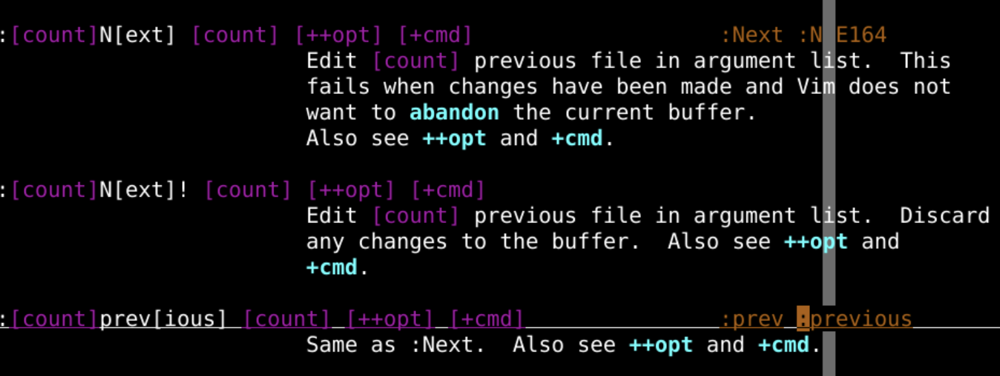
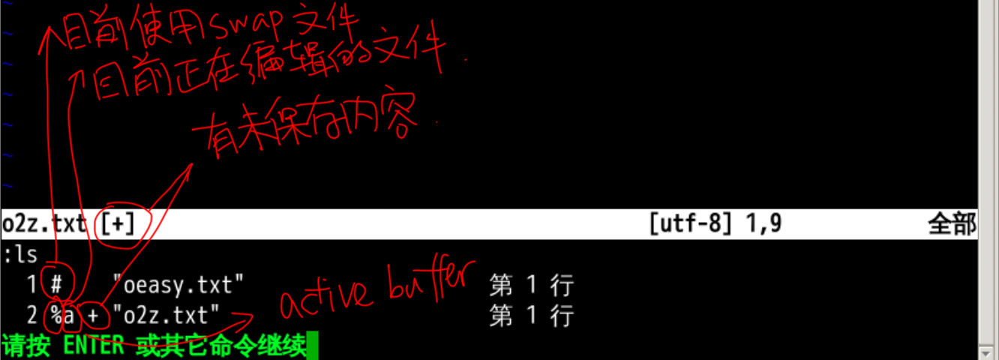
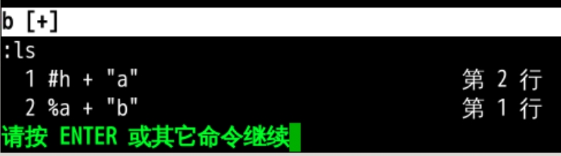
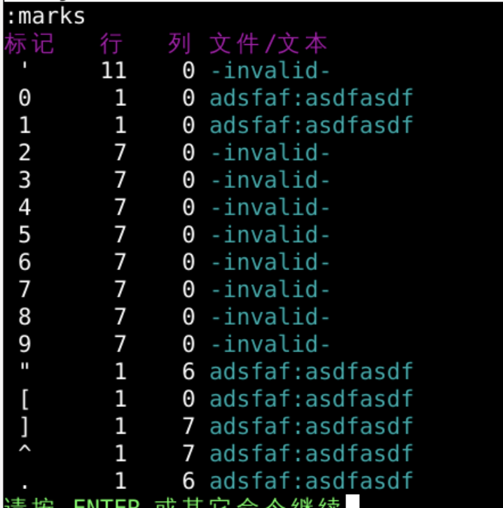
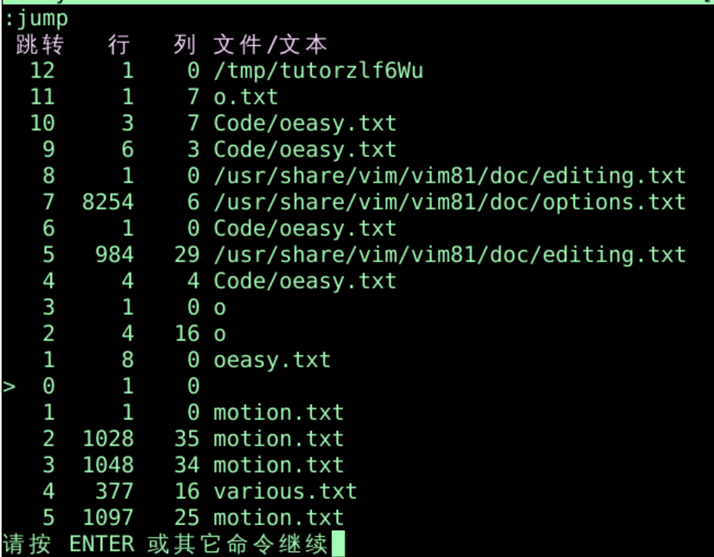
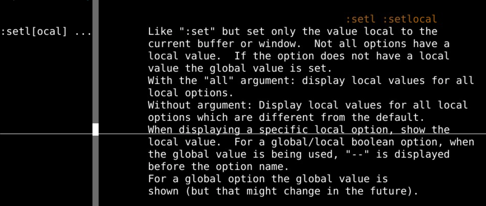

编辑过程
回忆上次
- 我们这次了解了编辑过程
- 默认有一个替换文件swap
- 修改的内容会保存到一个
swap文件- 如果
swp已经存在 - 会有个
swo文件 - 以此类推
- 如果
- 替换文件可以进行对源文件的修复
- 没保存到源文件的可能保存到了替换文件
- 可以统一设置替换文件的位置
- 可以控制保存替换文件的触发条件
- 字符数
- 时间长度
- 手动触发
- 修改的内容会保存到一个
- 还可以设置备份文件
- 备份文件backup
- 写备份文件writebackup
- 其实我们更常见的是另存为命令进行备份
- 目前
vim都是打开单一文件 vim可以打开两个文件吗？🤔
查看手册📕
man vim- 可以看到
vim可以有多个参数 - 在
terminal里面直接运行vim oeasy.txt o2z.txt
- 这样就会打开两个文件
- 可以看到
- 每一个打开的文件是一个
buffer缓冲区- 可以在
vim中用:buffers查看到目前打开的文件 - 可以
:h buffers查看手册
- 可以在

上下切换缓存buffers
:buffers可以查看所有缓冲:ls也可以查看所有缓冲- 注意不是
:!ls !是执行外部命令ls
- 可以查看手册
:h :ls- 可以通过
:bn[ext],选择下一个buffer - 可以通过
:bprev[ious],选择上一个buffer - 也可以通过
:bN[ext],选择上一个bufer
- 可以通过

打开指定缓存buffer
- 可以用
b[uffer]1、b2直接切入指定的buffer - 也可以用文件名，比如
b[uffer] oeasy.txt - 可以用
bf[irst]，打开第一个buffer - 可以用
bl[ast]，打开最后一个buffer - 你可以尝试复制粘贴一些内容
- 然后跨文件进行复制粘贴操作
- 并回忆一下多寄存器的复制粘贴
buffers细节

- 可以在打开帮助手册的情况下，
:ls!，看到不在缓冲列表的缓冲+有修改未保存内容-可修改标签关闭=只读缓冲区a活跃缓冲区，当前的缓存区u没有在列表里面的缓冲区h隐藏缓冲区x有读取错误的缓冲区%当前缓冲区#有swap替换 文件的缓冲区
强制跳转buffer
- 当我想跳转的时候，如果当前文件没有保存，他会不允许跳转
- 只能先
:w保存 - 然后再跳转
- 也可以用
:wn- 先
write - 再
next
- 先
- 只能先
- 如果我想强行跳转
:b!2- 这样当前文件没有直接保存到硬盘里，但
swap中有 - 如果想
:b2的时候自动保存 - 需要
:set autowrite - 可以
:h autowrite查看手册
- 也可以不保存强行退出当前
buffer:q!
- 甚至不保存强行退出所有
buffer:qall!- 也可以保存所有未保存的文件
:wall - 全部保存并退出
:wqall
- 回忆一下上次提到的
:saveas oeasy.txt:w >> o2z.txt
hidden的作用
- 在
terminal中vim两个文件a、bvim a b- 在
a里面进行了修改 - 如果这个时候我想
:b2切到第2个buffer - 他会提示我要保存当前这个
a
- 如果设置了
:set hidden，这个可以直接切换a存在于swap已经修改- 还没
w的状态 - 注意这个和
autowrite不同 - :set autowrite`
- 切换的时候自动保存
:ls可以看到两个都有+(未保存标记)a是activeh是hidden
- 这个时候就
:wall- 可以把这两个一起保存

跨文件跳转
:marks可以看到各种mark标记

- `"是上次光标离开此缓存buffer时候的位置
- `.是上次编辑此缓存buffer发生的位置
- 也可以用大写字母定义跨文件标记
mA定义标记"A跳转到标记
跳转列表
- 在你跳来跳去的时候
-
形成了一个跳转列表
:jump
-
可以来回来去跳跃
- CTRL+O 上一个
- CTRL+I 下一个

- 如果我想在不同的buffer中使用不同的参数，应该怎么做呢？
本地开关

- setlocal 本地开关
:set ruler- 全局的标尺开关打开
:setlocal ruler- 只打开当前buffer的ruler
总结
- 我们这次了解了缓冲区buffer
-
ls可以查看buffer,如下是buffer缓冲的一些flag+有修改未保存内容-可修改标签关闭=只读缓冲区a活跃缓冲区u没有在列表里面的缓冲区h隐藏缓冲区x有读取错误的缓冲区%当前缓冲区#有swap替换文件的缓冲区
-
可以在
buffer跳转- 可以通过
bn[ext],选择下一个buffer - 可以用
b[uffer1]、b2进入指定的buffer - 也可以用文件名，比如
b[uffer] oeasy.txt - 可以用
bf[irst]，打开第一个buffer - 可以用
bl[ast]，打开最后一个buffer
- 可以通过
- 不保存也可以跳转
- 设置
hidden
- 设置
- 跳转的时候自动保存
- 设置
autowrite
- 设置
- 可以用大写字母设置跨文件标记mark
mA添加标记'A跳转到标记
- 关于强行跳转和保存退出
- 强制退出当前窗口
:q! - 不保存强行退出所有
buffer:qall! - 保存所有未保存的文件
:wall - 全部保存并退出
:wqall
- 强制退出当前窗口
vim中打开的两个文件缓存buffer- 可以放到两个窗口里面同时查看吗？🤔
- 下次再说 👋